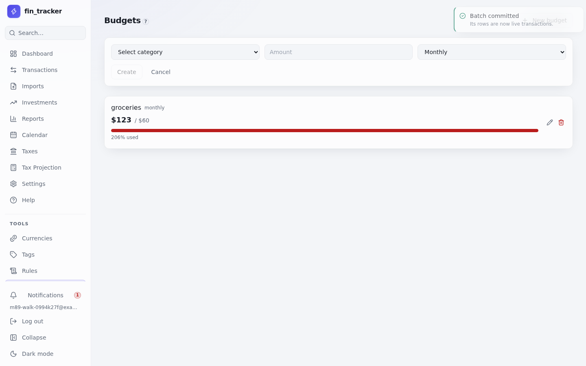
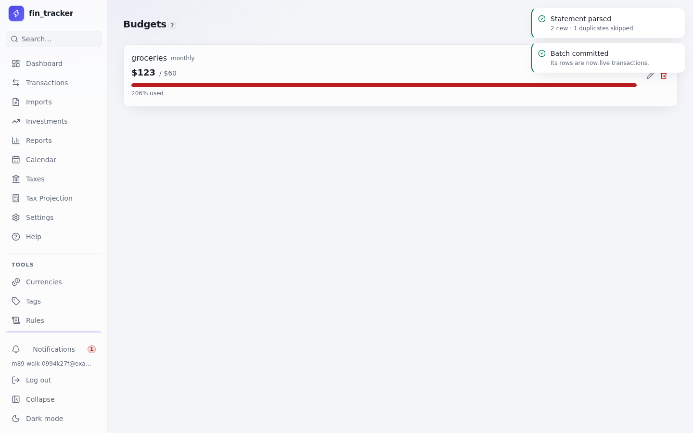

Your first budget, and what that red bar means
Set a limit, watch it honestly — including the week you blow past 100%.
-
Start one
Budgets lives in the TOOLS section of the navigation. Press New budget, pick a category, give it an amount, and choose whether it repeats monthly or yearly — that is the whole form. Budgets are per category rather than per account, so one number covers every card and account that category appears on.

-
A worked example: $60 for groceries
Say you set groceries to $60 a month, then the month goes sideways and you spend $123.45 of it. The card reads $123 / $60 and prints 206% used: the true number, rounded to a whole per cent, not a bar that quietly stops at the top. The bar fill caps at 100% because a bar cannot be longer than its card, but the number beside it never caps. If you are at 206%, you are told 206%.

-
What the colours tell you
Green means you are under 80% of the limit. Amber means 80% to 99% — still inside, but the rest of the month is going to be tight. Red means 100% or more: the money is spent, and the number says by how much. The colour is never the only signal either — the percentage sits right next to the bar as text, so it survives a colour-vision difference, a screenshot and a bad monitor.
-
What hovering gives you
Hovering the icons on the right of a budget row gives you their names: Edit (the pencil) and Delete (the bin). The percentage itself is not behind a hover — it is printed on the card at all times, which is what makes the over-budget moment impossible to miss on the way past.
-
Categories that work well
Canadian household budgets land well on three or four categories you can actually name: groceries (weekly and volatile — the one in the example above), entertainment (dining and streaming together, so one limit covers both), and housing (rent or mortgage plus utilities, the number that never moves). Start with those three. A budget with twenty categories is a budget you stop updating in a fortnight.